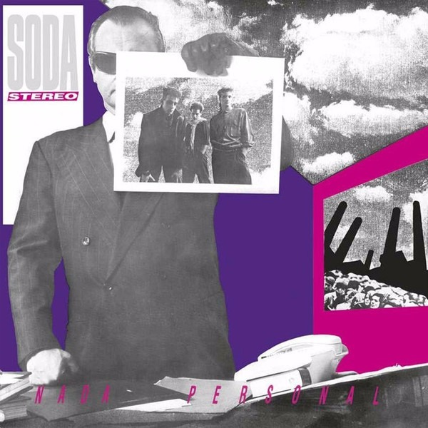
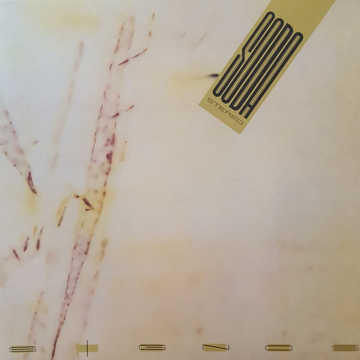
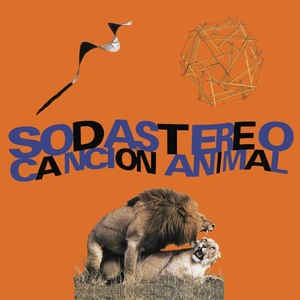

Soda Stereo es una de las bandas más importantes e influyentes en toda la historia del rock argentino y latinoamericano, con una popularidad masiva en todo el continente desde mediados de los años '80 y hasta la actualidad. A lo largo de su extraordinaria carrera consigue todo tipo de records históricos y la magia que producen sus canciones sigue más vigente que nunca, tal como demuestran las millones de reproducciones vía streaming, las ventas de discos y el suceso del espectáculo “Sép7imo día” del Cirque du Soleil, dedicada al grupo en 2017.
Desde el comienzo, cuando da sus primeros pasos, Soda tiene la visión de ocuparse de detalles que pocos artistas argentinos toman en cuenta, como el buen sonido, la puesta en escena, la imagen en vivo y en fotos, lo que sumado a su producción musical los lleva por una trayectoria siempre ascendente y con características propias de pionero. El grupo primero recorre la ciudad de Buenos Aires y alrededores, luego todo el territorio nacional y, una vez consagrado como incuestionable número uno, prueba suerte en el exterior, algo nunca encarado por un conjunto de rock latinoamericano. El resultado es tan positivo que Soda Stereo impone el rock en castellano en todo el continente.
Primero con influencias pop, luego dark y funk, Madchester y trip-hop, rock alternativo y electrónica, incluso revisitando el viejo rock argentino e internacional, siempre con elementos musicales de vanguardia y de rock clásico, el resultado es único y original. En definitiva, una combinación tremendamente personal que marcó a tres generaciones de fans y músicos. Gustavo Cerati, Zeta Bosio y Charly Alberti imponen canciones, ropas, cortes de pelo, formas de componer, tocar y cantar, incluso maneras de encarar el inmenso negocio que los rodea. A lo largo de toda su carrera, Soda Stereo crece hasta límites insospechables, tal como demostró la gira “Me Verás Volver” en 2007, el espectáculo del Cirque du Soleil en 2017 y este nuevo desafío bautizado “Gracias Totales”. Soda no se detiene.
| Album | Nombre | Año | Descripción |
|  | Nada personal | 1985 | Nada Personal es el nombre del segundo álbum de estudio de la banda de rock argentina Soda Stereo, y fue editado en Argentina el 21 de noviembre de 1985. Fue reeditado en CD por primera vez en 1991. |
|  | Signos | 1986 | Es considerado por la mayoría de los críticos como el segundo mejor álbum de la banda, después de Canción animal, de 1990. |
|  | Canción Animal | 1999 | Canción animal es considerado como el mejor álbum de la banda en toda su carrera, y dejó una huella no sólo en el rock argentino sino en todo el continente. Es considerado como uno de los discos más importantes y emblemáticos en la historia del rock en español. |